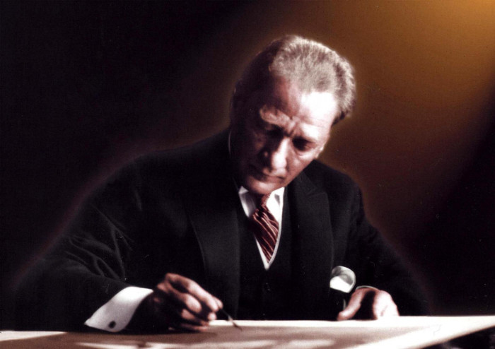

Mustafa Kemal Ataturk

Mustafa Kemal Ataturk is a Turkish field marshal, revolutionary statesman, author,
and the founding father of the Republic of Turkey,
serving as its first president from 1923 until his death in 1938.
Here's a time line of Ataturk's life:
- 1876 Accession of Abdulhamit II, Sultan of the Ottoman Empire. Abdulhamit proclaims Parliamentary Constitution.
- 1877 Russia invades Ottoman lands. Abdulhamit suspends Constitution and dissolves Ottoman Parliament.
- 1878 Russian victory confirmed by Treaty of San Stephano. Treaty of Berlin replaces Treaty of San Stephano on July 13 1878 after Congress ends.
- 1881 Mustafa Kemal Ataturk is born in Salonika.
- 1893 The young Mustafa enters the Military Preparatory School in Salonika and is given the second name "Kemal" by his teacher.
- 1895 Mustafa Kemal enters the Military High School at Manastir.
- 1899 Mustafa Kemal enters the infantry class of the Military Academy in Istanbul.
- 1902 Mustafa Kemal graduates from the Military Academy and continues his studies at the General Staff College.
- January 11, 1905 Mustafa Kemal graduates from the General Staff College with the rank of Staff Captain and is posted to the Fifth Army, based in Damascus.
- October 1906 Mustafa Kemal and his friends become active in the little known "Fatherland and Freedom" society in Damascus.
- September 1907 Mustafa Kemal is transferred to the Third Army and travels to Salonika.
- September 13, 1911 Mustafa Kemal is transferred to the General Staff in Istanbul.
- January 9, 1912 Mustafa Kemal successfully leads the Tobruk offensive in Libya.
- November 25, 1912 Mustafa Kemal is appointed Director of Operations (Mediterranean Straits Special Forces).
- October 27, 1913 Mustafa Kemal is appointed Military Attaché in Sofia.
- March 18, 1915 Allied navy fails to force the Turkish Straits. Mustafa Kemal demonstrates outstanding skills as a soldier and commander throughout the battle at Canakkale.
- April 25, 1915 Allied troops land at Arıburnu (Anzac Cove) along the Dardanelles; Mustafa Kemal plays a major role in stopping their advance.
- August 9, 1915 Mustafa Kemal is appointed Commander of the Anafartalar Group on the Gallipoli Peninsula.
- April 1, 1916 Mustafa Kemal is promoted Brigadier-General.
- August 6-7, 1916 Mustafa Kemal wins Bitlis and Muş back from the enemy.
- October 31, 1918 Mustafa Kemal becomes Commander, 'Lightning Group' of Armies.
- April 30, 1919 Mustafa Kemal is appointed Inspector of the 9th Army based in Erzurum and is granted extensive powers.
- May 16, 1919 Mustafa Kemal leaves Istanbul for Samsun on the Bandırma vessel.
- May 19, 1919 Mustafa Kemal lands in Samsun, a city located on the Black Sea.. This date marks the beginning of the Turkish national liberation movement, and is an official holiday dedicated to the youth of Turkey.
- July 8, 1919 Mustafa Kemal resigns from his post of Inspector of the 3rd Army, and from the army.
- July 23, 1919 Mustafa Kemal is elected Chairman of the Erzurum Congress.
- September 4, 1919 Mustafa Kemal is elected Chairman of the Sivas Congress.
- December 27, 1919 Mustafa Kemal arrives in Ankara with the Excutive Committee.
- April 23, 1920 Mustafa Kemal opens the Turkish Grand National Assembly in Ankara.
- May 11, 1920 Mustafa Kemal is condemned to death by the government in Istanbul.
- August 5, 1921 Mustafa Kemal is appointed Commander-in-Chief by the Grand National Assembly.
- August 23, 1921 The battle of Sakarya, led by Mustafa Kemal, begins.
- September 19, 1921 The Grand National Assembly gives Mustafa Kemal the rank of Marshal and the title Gazi (Victor).
- August 26, 1922 Gazi Mustafa Kemal begins to lead the Great Offensive from the hill of Kocatepe.
- August 30, 1922 Gazi Mustafa Kemal Paşa wins the battle of Dumlupınar.
- September 10, 1922 Gazi Mustafa Kemal enters Izmir.
- November 1, 1922 The Grand National Assembly accepts Gazi Mustafa Kemal's proposal to abolish the Sultanate.
- January 14, 1923 Mustafa Kemal's mother Zübeyde Hanım dies in Izmir.
- October 29, 1923 Proclamation of the Turkish Republic. Gazi Mustafa Kemal is elected Turkey's First President.
- August 24, 1924 As part of Turkey's modernization, Gazi Mustafa Kemal wears a hat at Sarayburnu in Istanbul.
- August 9, 1928 As part of Turkey's reform process, Gazi Mustafa Kemal educates the public on the new Turkish alphabet at Sarayburnu.
- April 12, 1931 Gazi Mustafa Kemal establishes the Turkish Historical Society.
- July 12, 1932 Gazi Mustafa Kemal founds the Turkish Linguistic Society.
- June 16, 1934 The Grand National Assembly passes a law granting Gazi Mustafa Kemal the surname "Atatürk."
- November 10, 1938 Ataturk died at five past nine in the morning on November 10 in Dolmabahce Palace. Mourning Turkish citizens came to Istanbul to pay their last respects to Ataturk, until November 19, when the coffin in which his body rested, covered by a Turkish flag, was taken in procession to Sarayburnu. After it was placed onto the battleship Yavuz, it was transported to Izmit and later placed on a specially designated train which travelled at a slow speed throughout the country to enable mourners to pay tribute to their leader. Once the coffin arrived in Ankara on November 20, an official funeral was held on November 21. Dignitaries from many countries attended Ataturk’s state funeral. The coffin was moved in a solemn procession by gun carriage from the Grand National Assembly to the Ethnographic Museum, which had been selected as a temporary resting place until a mausoleum for Atatürk could be constructed.
- November 10, 1953 At five past nine on November 10, 1953, Ataturk’s remains were taken from the Ethnographic Museum in a Turkish flag-draped coffin for burial at Anıtkabir.
"To see me does not necessarily mean to see my face. To understand my thoughts, my feelings is to have seen me." -Mustafa Kemal Ataturk
If you have time, you should read more about this incredible human being on his Wikipedia Entry.